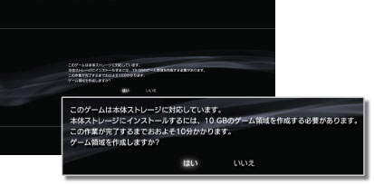

ゲーム > PlayStation®2 / PlayStation®規格ソフトウェアを遊ぶ > PlayStation®2規格ソフトウェアのインストール
PlayStation®2規格ソフトウェアのインストール
日本および北米地域で販売されているPS3™だけで使える機能です。
次のPlayStation®2規格ソフトウェアを、PS3™の本体ストレージにインストールして遊べます。
- 「信長の野望Online」および「同拡張パック」 *1
- 「ファイナルファンタジーXI」および「拡張データディスク」
- 「SOCOM II: U.S. NAVY SEALs」および「OPM*2 Issue 87, OPM*2 Issue 88, OPM*2 Issue 89, OPM*2 Issue 90に付属の関連ディスク」 *3
- SOCOM 3: U.S. NAVY SEALs *3
- SOCOM: U.S. NAVY SEALs Combined Assault *3
| *1 |
日本地域で販売されているPS3™だけにインストールできます。 |
|---|---|
| *2 |
Official PlayStation Magazine |
| *3 |
北米地域で販売されているPS3™だけにインストールできます。 |
重要
- PS3™では、一部のPlayStation®2およびPlayStation®規格ソフトウェアが、従来のPlayStation®2およびPlayStation®と異なる動作をする場合や、適切に動作しない場合があります。
- また、一部のPS3™では、PlayStation®2規格ディスクの再生に対応していません。詳しくは［再生できるディスクの種類について］、各地域のWebサイト、または製品同梱の取扱説明書をご覧ください。
インストールの準備をする
この機能を使うには、あらかじめPS3™の本体ストレージに［PS2 System Data］をインストールしておく必要があります。［PS2 System Data］は、 （PlayStation®Store）からダウンロードできます。
（PlayStation®Store）からダウンロードできます。
1. |
|
|---|---|
2. |
|
3. |
|
 （PlayStation™Network）から
（PlayStation™Network）から （ゲームデータ管理）に保存されます。
（ゲームデータ管理）に保存されます。PlayStation®2規格ソフトウェアをインストールする
PS3™の本体ストレージにインストール可能なPlayStation®2規格ソフトウェアを起動すると、次のような画面が表示されます。

はじめにPS3™の本体ストレージにゲーム領域を作成し、そこにPlayStation®2規格ソフトウェアをインストールします。画面の指示に従って、ゲーム領域の作成と、ソフトウェアのインストールを行ってください。
ヒント
- インストールするデータの種類や、ディスクの枚数、必要な本体ストレージの空き容量などは、ソフトウェアによって異なります。詳しくは、次のサポートページをご覧ください。
- - 日本地域：インフォメーションセンターからのお知らせ
- - 北米地域：PlayStation® Knowledge Center *
- * ここから各ソフトウェアの情報を検索できます。
- インストールしたPlayStation®2規格ソフトウェアは、
 （ゲーム）から起動できます。
（ゲーム）から起動できます。